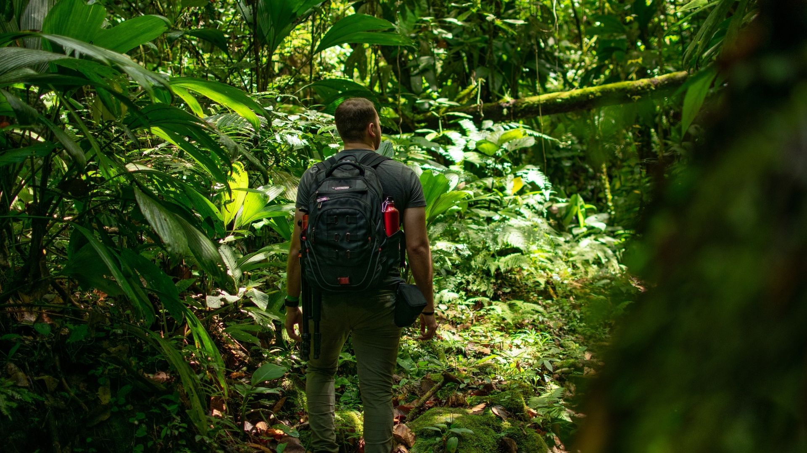
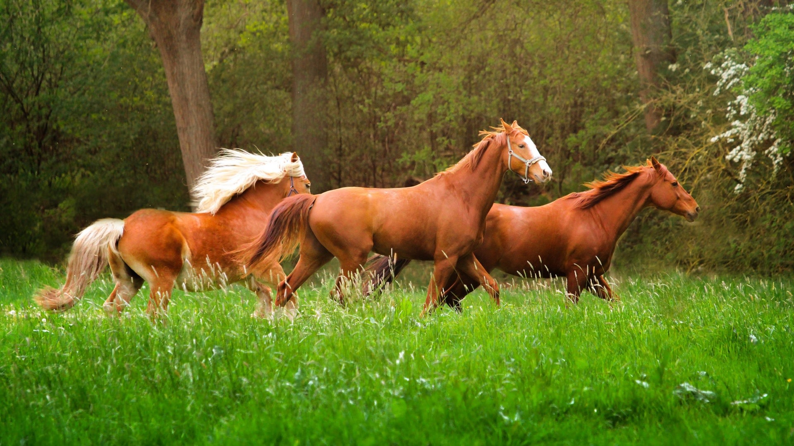
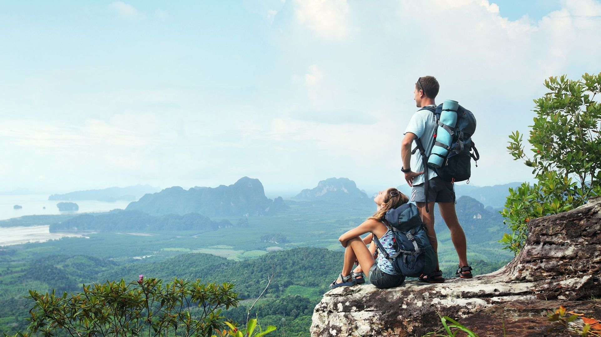

Adentrate en esta nueva modalidad . . .
El turismo alternativo sostenible toma en cuenta la conservación de los recursos, así como establecer y desarrollar una cultura turística medioambiental, para la elaboración de un turismo distinto e innovador
El término sostenible se refiere a la mantención de la oferta laboral y los ingresos durante todo el año, sin depender de la región
Tipos de turismo
Ecoturismo
Es el turismo alternativo donde los viajes que tienen como fin el realizar actividades recreativas de apreciación y conocimiento de la naturaleza a través del contacto con la misma, cuidando su conservación y connotaciones culturales.
Rural
Son aquellos viajes que tienen como fin realizar actividades de convivencia e interacción con una comunidad rural, en todas aquellas expresiones sociales, culturales y productivas cotidianas de la misma.
Aventura
Es una actividad turística donde los viajes tienen como fin realizar actividades recreativas, asociadas a desafíos que son presentados por la naturaleza y puedes aventurarte a explorar más allá de lo tradicional donde tus propias limitaciones pueden ser tú límite.
Sitio web realizado por: Maicol Pastor, Gabriel Pereira, Mateo Montero
Alumnos de 2°BB Informática